Twice Super Fanpage!
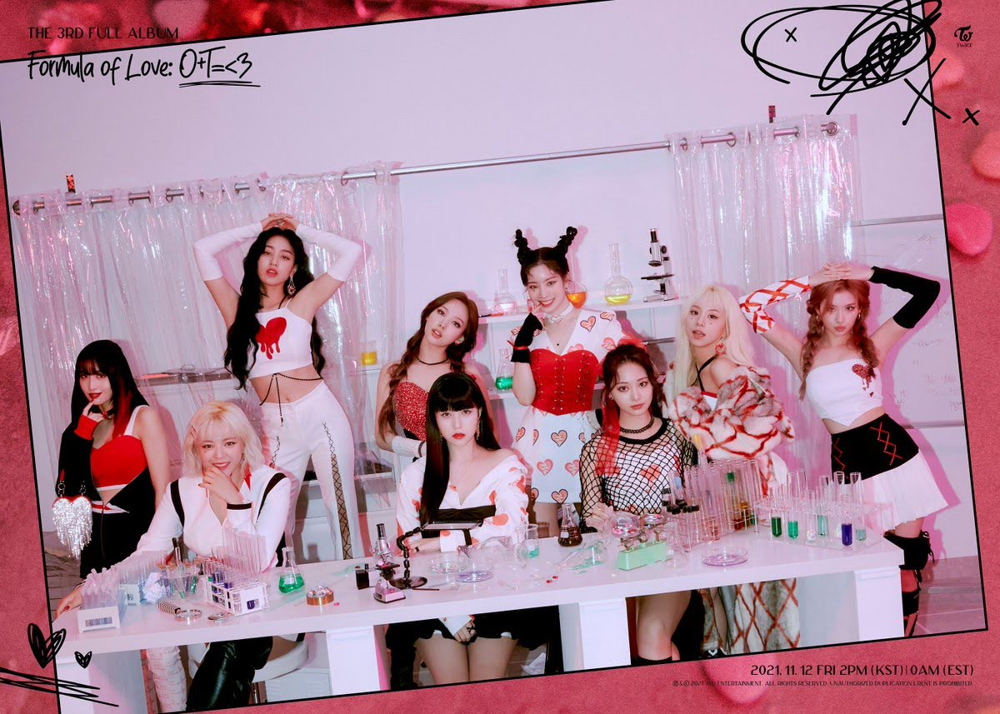
Twice is a girl K-Pop group consisting of nine members. Jihyo, Nayeon, Sana, Mina, Jeongyeon, Momo, Dahyun, Chaeyoung, and Tzuyu. Twice was formed under the television program Sixteen. Their group is under the music label, JYP Entertainment a company that is one of the three biggest music labels. Their official fan colors are apricot and neon magenta. They are known for their cute concepts, however their latest comebacks are more mature and fans, including me, love this change. Twice rose to fame in 2016 with their single "Cheer Up." Twice's most famous song is Fancy and for good reason! The visuals, the mature vibe, and their cute title tracks created one of their best songs.
Member Profiles
| Name |
Picture |
Position |
| Jihyo |
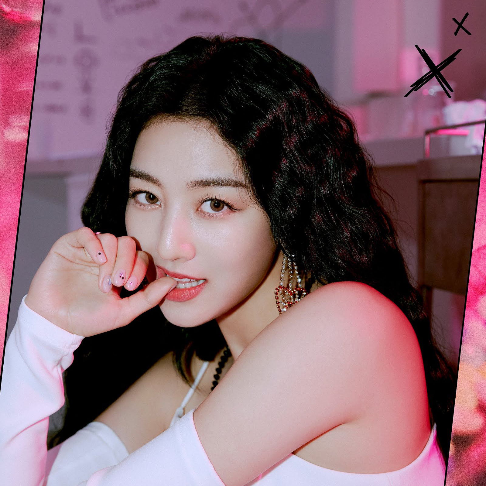 |
Leader, Main Vocalist |
| Nayeon |
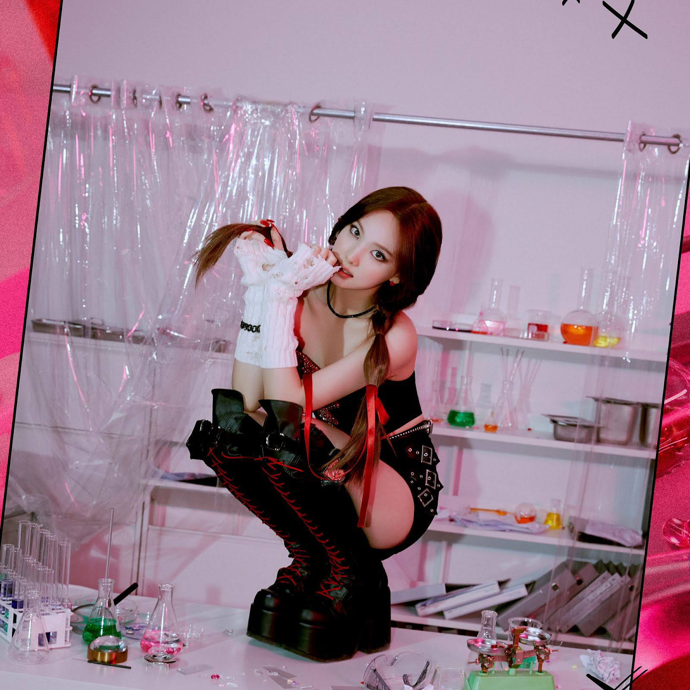 |
Lead Vocalist, Lead Dancer, Face of the Group |
| Jeongyeon |
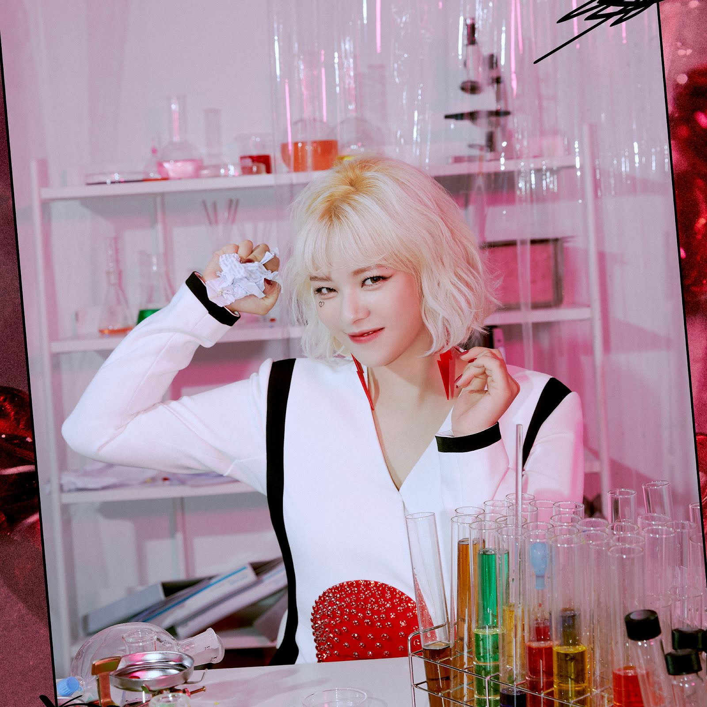 |
Lead Vocalist |
| Momo |
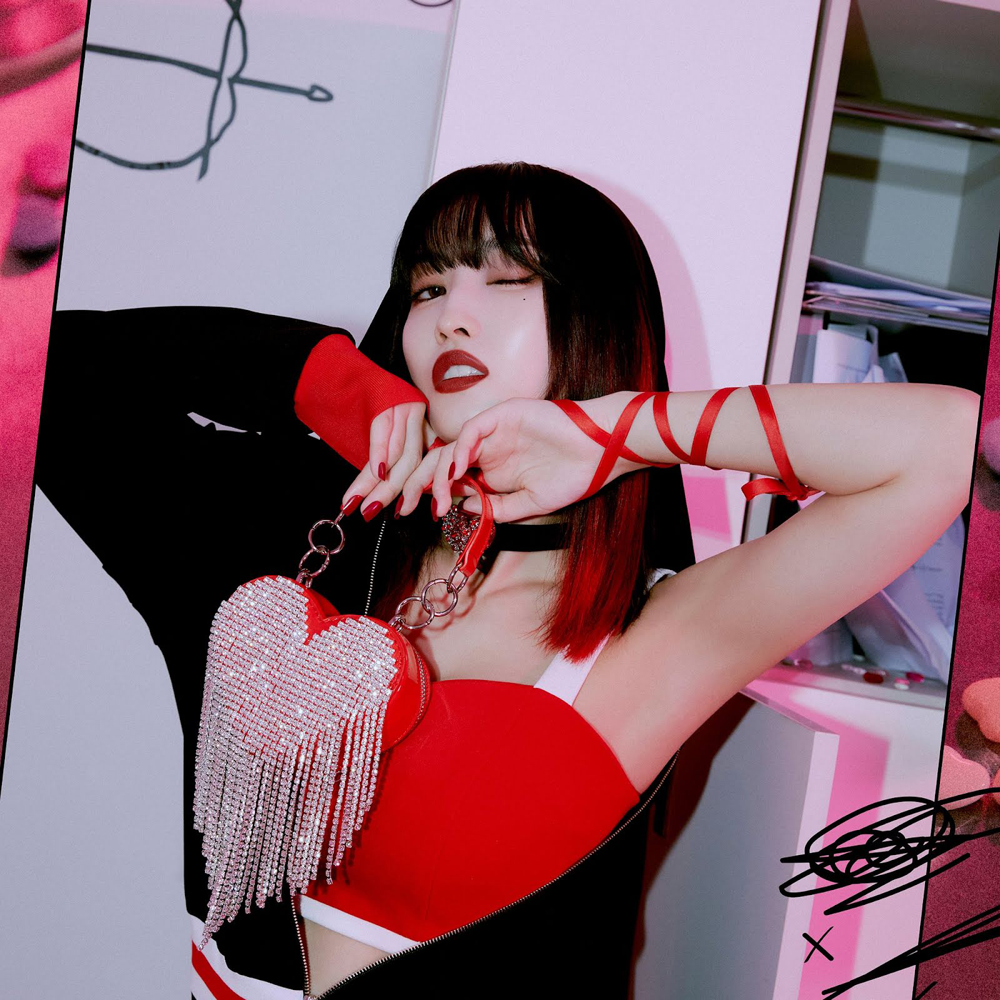 |
Main Dancer, Sub Vocalist, Sub Rapper |
| Sana |
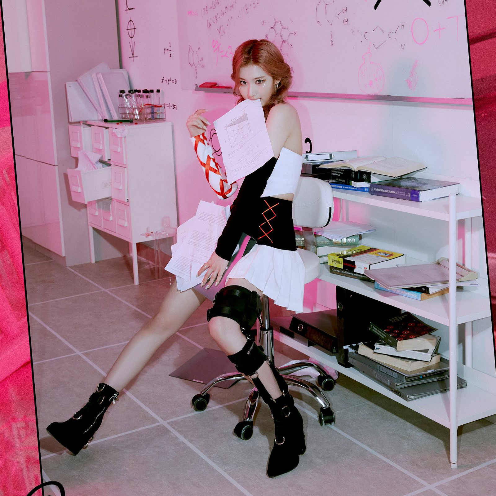 |
Sub Vocalist |
| Mina |
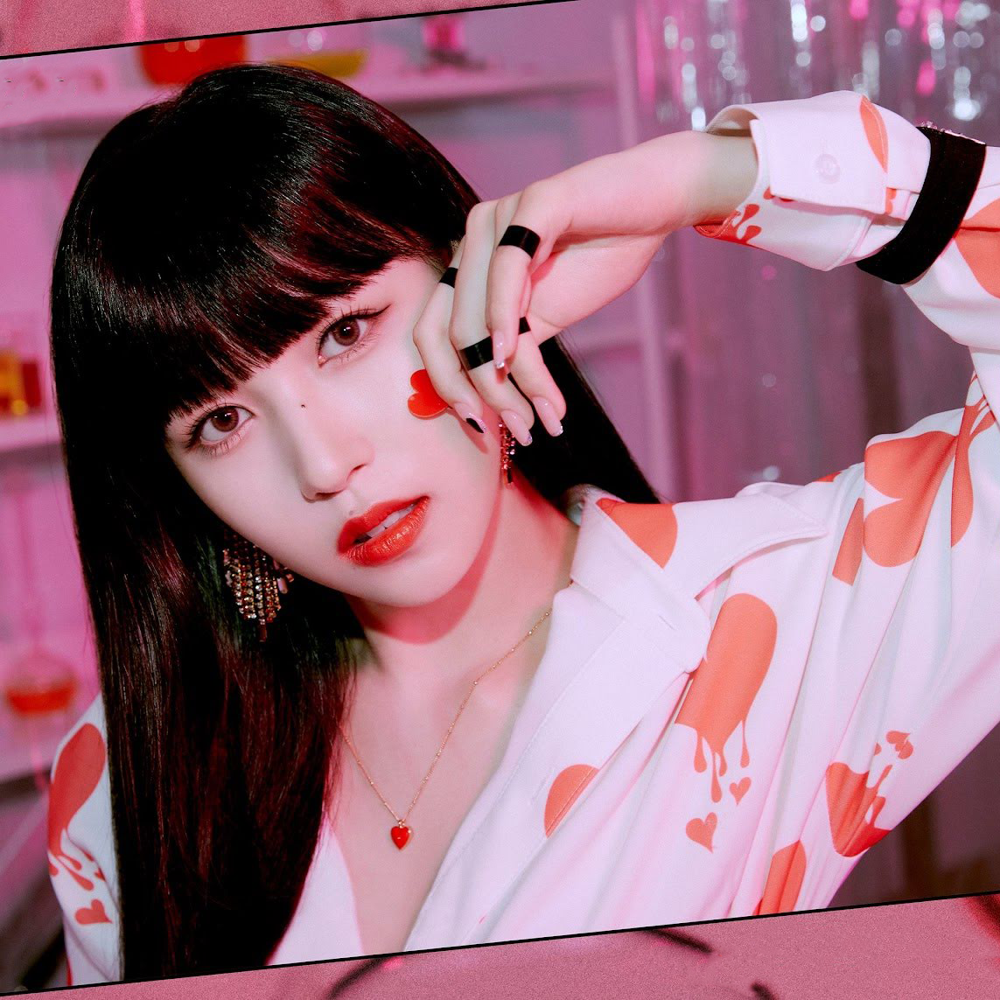 |
Main Dancer, Sub Vocalist |
| Dahyun |
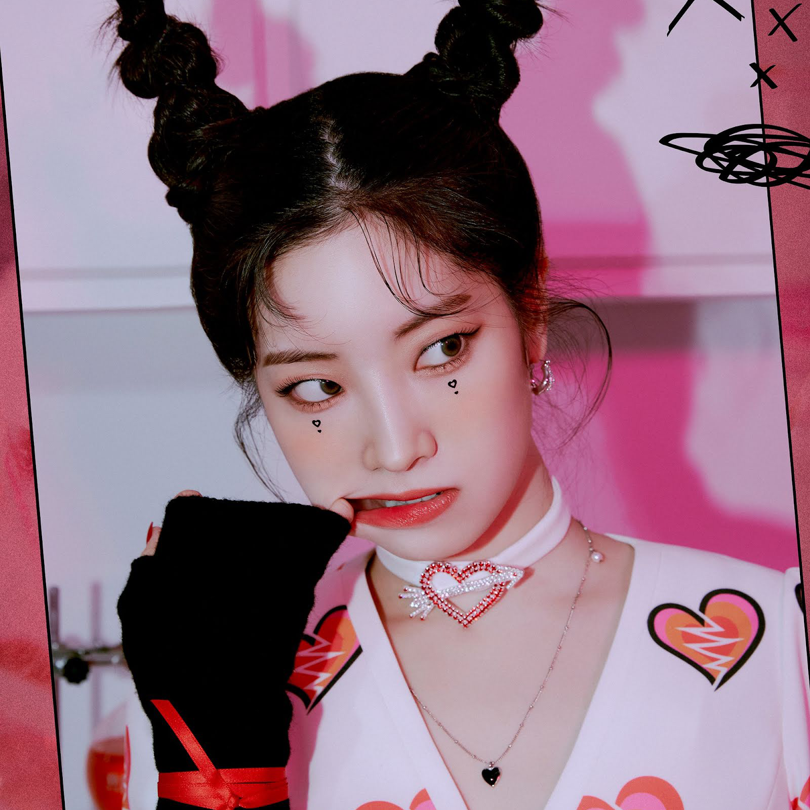 |
Lead Rapper, Sub Vocalist |
| Chaeyoung |
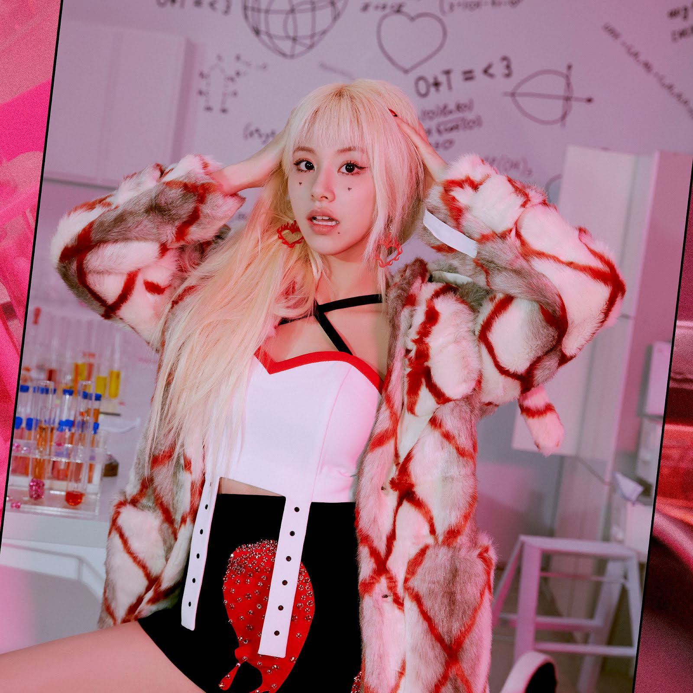 |
Main Rapper, Sub Vocalist |
| Tzuyu |
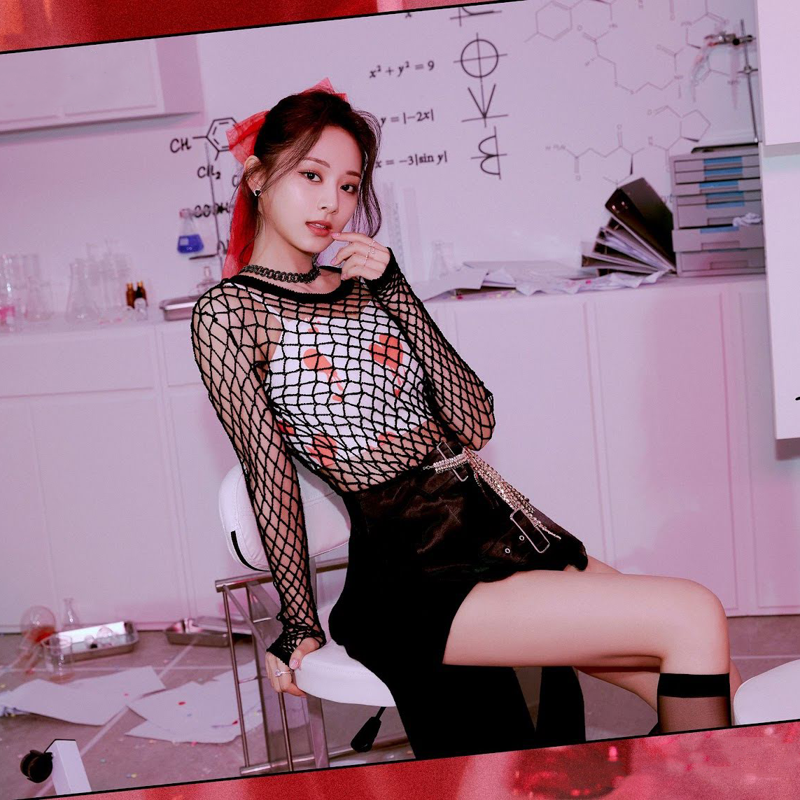 |
Lead Dancer, Sub Vocalist, Visual, Maknae |
My Favorite Song Lyrics
"Everyday I felt love only in the movies" -Nayeon, "What is Love?"
My Top 5 Favorite Songs From Twice
- FANCY
- I Can't Stop Me
- Scientist
- Alcohol-Free
- What is Love
Who Owned Each Music Video Era?
- Ohh Ahh
- CHEER UP
- TT
- KNOCK KNOCK
- SIGNGAL
- Likey
- Heart Shaker
- What is Love?
- Dance The Night Away
- YES or YES
- FANCY
- Breakthrough
- Feel Special
- Fake & True
- MORE & MORE
- I CAN'T STOP ME
- CRY FOR ME
- The Feels
- SCIENTIST
Twice Awards
- Asia Artist Awards: Won 8
- Gaon Chart Music Awards: Won 6
- Genie Music Awards: Won 5
- Golden Disc Awards: Won 8
- Korea Popular Music Awards: Won 2
- Melon Music Awards: Won 5
- Mnet Asian Music Awards: Won 10
- Seoul Music Awards: Won 5
- Soribada Best K-Music Awards: Won 7
- The Fact Music Awards: Won 2
Twice Graphics By Me
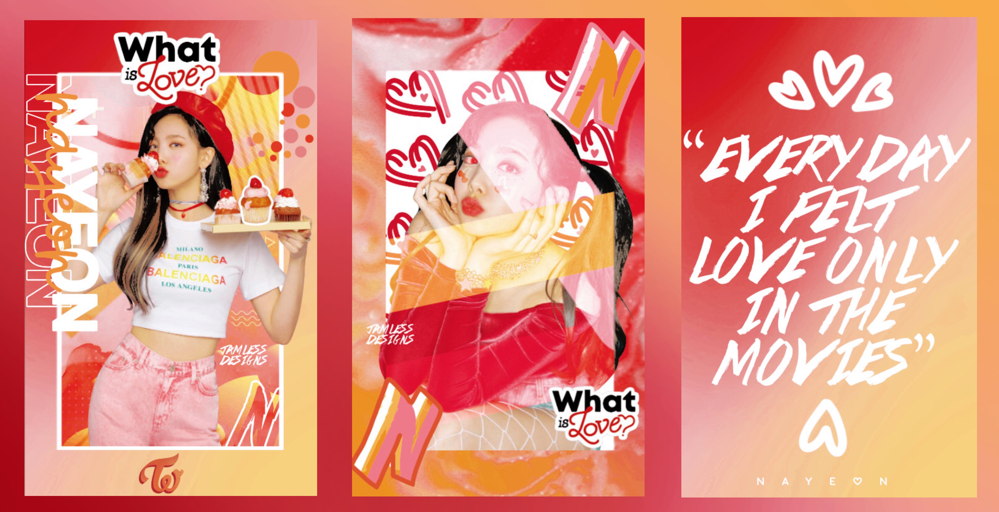

Social Medias
Instagram: twicetagram
Twitter: JYPETWICE